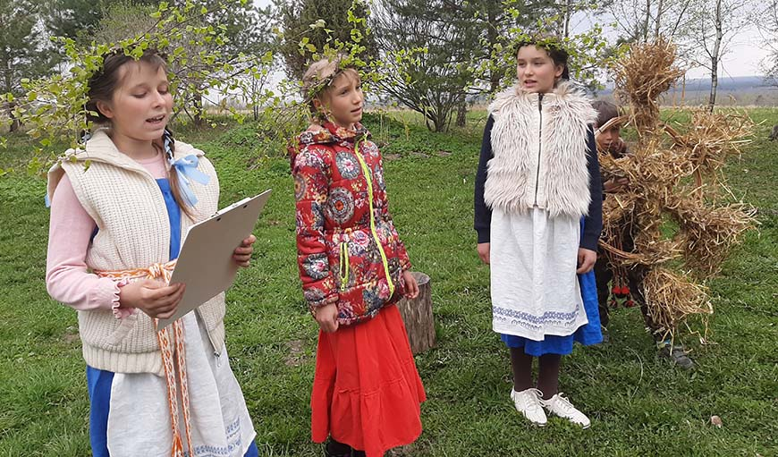
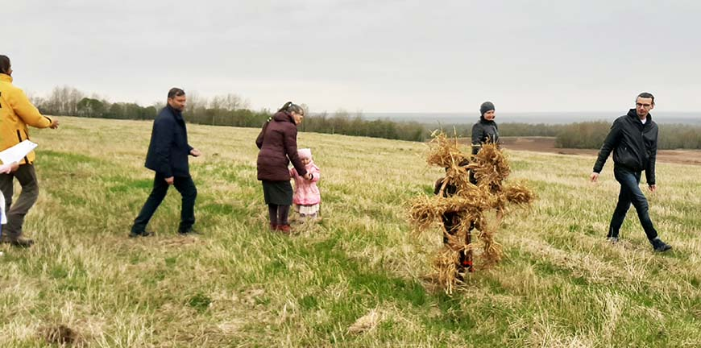
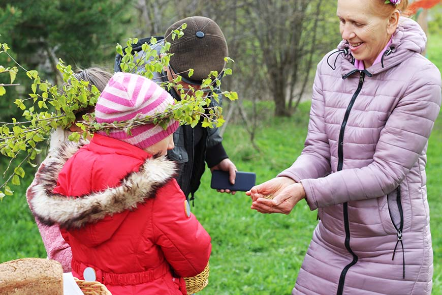

Свята Юр’я ў вёсцы Гара
Ужо некалькі год 6 мая ў нашай вёсцы Гара Віцебскага раёна святкуецца дзень Юр’я — Ярылы. Гэтае свята азначае сабой сапраўдны пачатак вясны, раскрыцця зямлі і яе гатоўнасць да сяўбы. У адраджэнні гэтай традыцыі ўдзельнічаюць самыя актыўныя жыхары вёскі. Матэрыял збіралі з розных крыніц, і цяпер існуе агульны сцэнарый.

Свята пачынаецца з абрадавай часткі. У пачатку гучыць песня " Юр’я, устань рана":
Юр’я, устань рана, паезджай у поле,
Адчыняй зямліцу, выпускай расіцу.
На цёплае лета, на буйнае жыта,
На полі снапамі, да свірна вазамі.
Зарадзі, Ярыла, жыта, да на новае лета,
Да на землю — караністае, а даверху — каласістае.
Зарадзі, Ярыла, жыта, да на новае лета,
Да на жыта, на пшаніцу, на ўсякую пашніцу.
Далей ідзе апавяданне, што к гэтаму дню вярталіся ластаўкі, пачынала кукаваць зязюля, а таксама з’яўляліся хрушчы. Юр’я — заступнік хатніх
жывёл і сельскай нівы. У яго знаходзяцца ключы, якімі ён замыкае зіму і адмыкае вясну, выпускае расу, благаслаўляе ўсё навокал: зямлю,
людзей, жывёл. Казалі, што раса ў гэты дзень валодае гаючай сілай. Аднак збіраць такую расу можна толькі да ўзыходу сонца.
У гульнявай форме ўспамінаем прыказкі, прыкметы і прымаўкі:
"Як дождж на Юр’я, то будзе хлеб і ў дурня",
"Як на Юр’я пагода, то на грэчку няўрода",
"Калі на Юр’я мароз, дык на балоце авёс",
"Да Юр’я корму і ў дурня",
" Юр’ева раса — не трэба коням аўса",
"Вось табе, бабуля, і Юр’еў дзень".
Потым усе збіраюцца ў карагод і спяваюць:
Прыехаў да нас зялены Ярыла -
Да на зялёным кані,
Зялёны, як травіца,
Расісты, як раса.
Прывёз жыта колас
І ад сонца добру вестку.
Карагод выходзіць на поле. Дзяўчына з рэшатам або міскай раздае ўсім збожжа. Са словамі: "Дзе карагод ходзіць, там жыта родзіць, а дзе не
бывае, там жыта ўлягае. Зарадзі, Божа, жыта на новае лета, на жыта, на пшаніцу, да на ўсякую пашніцу", кідаем збожжа, як бы засевая. Дзяўчына
выносіць каравай з мукі прошлага ўраджаю і частуе ўсіх.

Потым праводзіцца старажытны абрад-абярэг для свойскіх жывёл. Для гэтага робяцца варотцы з перакрыжаваных галінак, упрыгожаных ручніком.
Пад імі кладзецца тканы паясок, кажух і зачынены замок. Паясок для таго, каб жывёлы ведалі дарогу дадому. Кажух выбудоўвае нябачную чароўную
загарадзь, якая абараняе "ад змея паўзучага, ад магутнага мядзведзя, ад ваўка бягучага". Пасля чаго чароўны круг замыкаецца жалезным замком.
Дзяўчына выводзіць прыбраную казу, якую абкатывае велікадным яйкам і праводзіць пад варотцы, каб яна пераступіла праз паясок, кажух і замок.
Далей зноў гучыць песня:
Ярыла, уставай рана,
Адмыкай зямліцу,
Выпускай расіцу.
На цёплае лета,
На буйнае жыта,
Да на каласістае!

Пасля абрадавай часткі свята працягваецца рознымі гульнямі і народнымі танцамі.